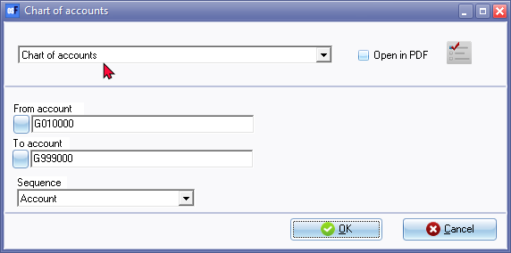
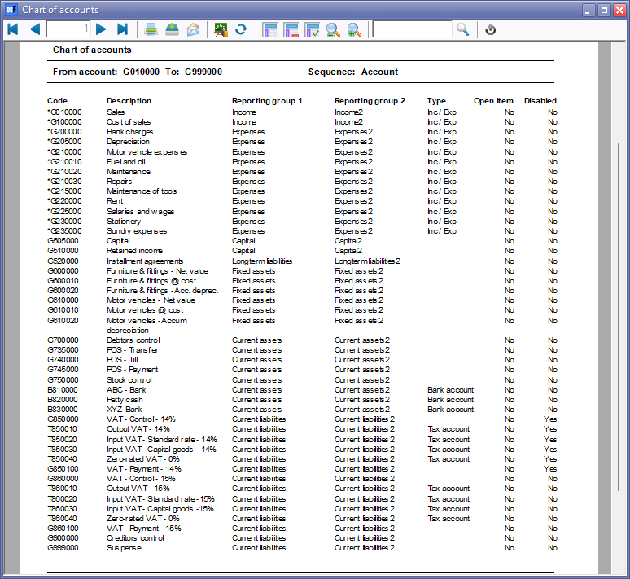

Ledger - Listing (Reports menu)
This report will list all accounts which are added or edited in Setup → Accounts.
Chart of accounts report options
To print a Ledger listing (Chart of Accounts) report:

- Select the following:
- From account ... To... - Select the accounts to include in the report.
- Sequence - Select "Account, Description, Type, Reporting group 1" or "Reporting group 2".
- Click on the OK button.
Printed : Chart of accounts report
An example of the "Chart of accounts" (General ledger accounts) ("Account" sequence), is as follows:

The details are as follows:
- Account code - The prefixes is as follows:
- G - General ledger account - If the Account code is prefixed with an asterisk (*), it is an Income / Expense account type and will be reported on the Income statement. All other accounts will be reported in the Balance sheet.
- B - Bank account - These accounts need to be linked to its own Payments and Receipts batch.
- T - Tax account - These accounts contains the Tax rate for Output and Input tax. These accounts need to match your VAT/GST/Sales Tax return form's codes.
- Type - This will indicate the type of account, i.e. Income / Expenses, Bank account and Tax account.
|
|
The Chart of Accounts includes the following three (3) important control accounts. These three (3) accounts need to be linked to the correct reporting groups, i.e.
|


- Open item - By default, all accounts are not open item. If the Open item account field is set to Yes, you may use the feature to link debit and credit transactions for these accounts.
- Disabled - If an account cannot be deleted (e.g. contains transactions and balances) and the account is no longer required, the Account may be set to "Disabled" in the "Status" field of Setup → Accounts. This will nor allow any transactions to be selected when processing transactions. Disabled (inactive) accounts are included in reports.